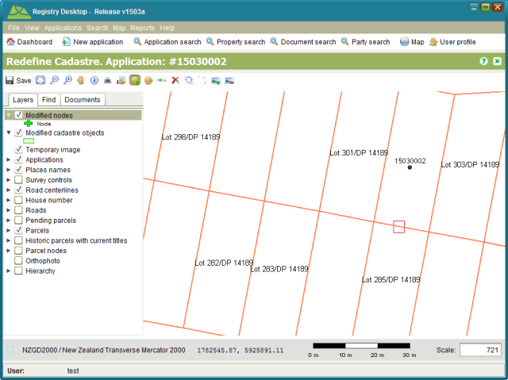
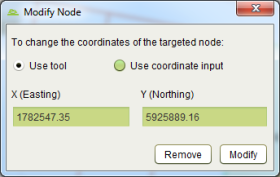
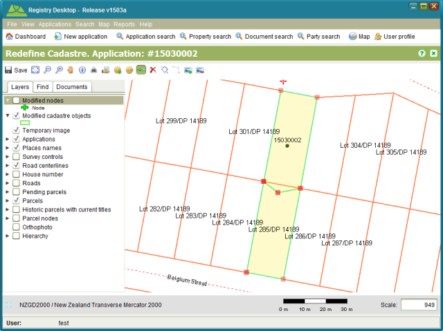

Nodes represent the fixed points of the parcel boundary. New nodes can be added using the
Add Node tool. Existing nodes can be relocated by using the Select Node tooland either updating
the node coordinate displayed in the Modify Node dialog or by using the Move Node tool  .
.
To add a new node, use the Add Node tool to drag a small selection box around the approximate location for the new node. Note that the selection box must be on top of an existing boundary. If the selection box is not on top of an existing boundary, the tool will not work.

Select the approximate location for a new node
You will then be prompted with the Modify Node dialog where you can choose to enter the node
coordinate (if you have the coordinate value) or use the Move Node tool  to locate the new node interactively on
the map.
to locate the new node interactively on
the map.

Modify Node Dialog
To enter a coordinate directly, select the Use coordinate input radio button on the Modify Node dialog. This will enable the X (Easting) and Y (Northing) fields allowing you to enter the coordinate. Once done, click the Modify buttonand the boundaries of the two adjacent parcels will be modified to include the new node. The new parcel boundaries will appear in light green (with yellow fill) while the original boundary will remain orange so that it is possible to differentiate between the two.
If you choose to locate the node interactively using the Move Node tool  , make sure
the Use tool radio button is selected on the Modify Node dialog and click Modify. The map
will redraw showing the parcels on either side of your selected boundary line with a light
green boundary and yellow fill. Adjust the scale of the map and using the Move Node tool
, make sure
the Use tool radio button is selected on the Modify Node dialog and click Modify. The map
will redraw showing the parcels on either side of your selected boundary line with a light
green boundary and yellow fill. Adjust the scale of the map and using the Move Node tool  , click
on the boundary line you wish to add the new node to. A new node will appear and you will be
able to drag the new node into the appropriate location.
, click
on the boundary line you wish to add the new node to. A new node will appear and you will be
able to drag the new node into the appropriate location.
Editing the location of an existing node follows much the same process as adding a new node.
Using the Select Node tool , drag the selection box around an
existing node. The Modify Node dialog will reappear and you will be able to modify the
coordinate value directly, use the Move Node tool  to interactively relocate the node or remove the node altogether by clicking
the Remove button.
to interactively relocate the node or remove the node altogether by clicking
the Remove button.

Pending parcels with updated boundaries